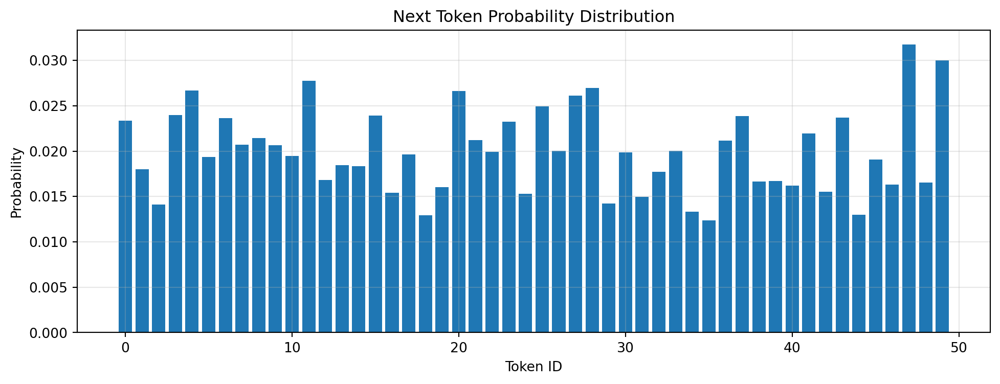
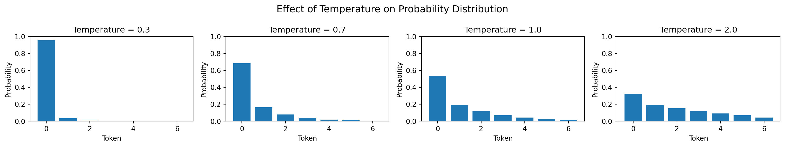
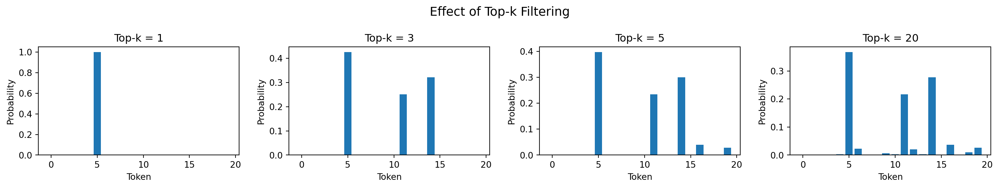
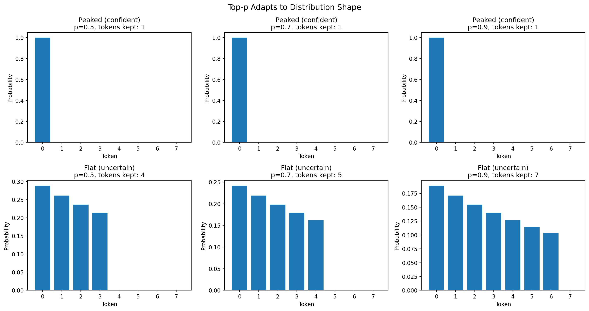
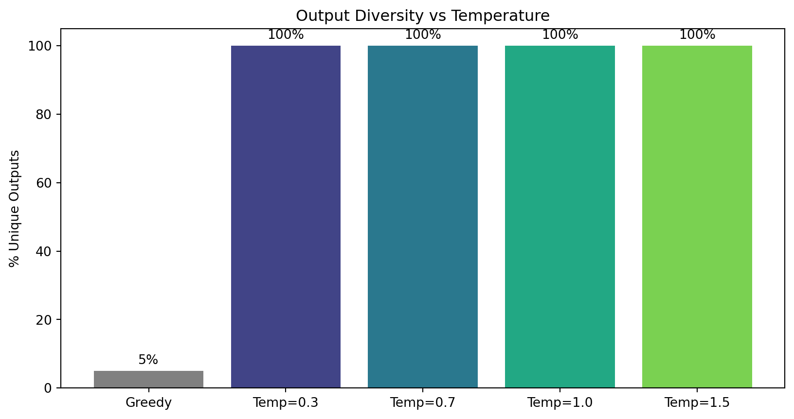

flowchart TB
subgraph loop["The Autoregressive Generation Loop"]
prompt["Prompt: [BOS, The, cat]"] --> model["Feed to Model"]
model --> probs["Get P(next token)"]
probs --> select["Select Token<br/>(decoding strategy)"]
select --> append["Append to Sequence"]
append --> check{"Done?"}
check -->|"No"| model
check -->|"Yes (max_len or EOS)"| output["Return Generated Tokens"]
end
Module 08: Generation
Introduction
After training a language model, we want to generate text. The model outputs probabilities for the next token - but how do we choose which token to use? This module explores various decoding strategies that produce different results.
Text generation is the process of producing new text from a trained model. The model predicts probability distributions over the vocabulary, and we must decide how to select the next token from these probabilities.
Why does the decoding strategy matter?
- Different strategies, different outputs: Greedy decoding gives deterministic results, sampling gives variety
- Control creativity vs coherence: Temperature and filtering parameters let us tune this tradeoff
- Application-specific needs: Code generation wants precision, creative writing wants diversity
- Avoid degenerate outputs: Poor settings lead to repetition, incoherence, or nonsense
Understanding generation is essential for building LLM applications.
What This Module Covers
- The autoregressive loop - How tokens are generated one at a time
- Decoding strategies - Greedy, temperature, top-k, top-p
- Repetition penalties - Preventing degenerate repetitive outputs
- Stop conditions - EOS tokens and maximum length
- Combining strategies - Real-world parameter combinations
- KV-cache optimization - Making generation efficient
The Generation Loop
Text generation is autoregressive - we generate one token at a time, feeding previous tokens back to the model:
Each step:
- Feed current tokens to the model
- Get probability distribution over vocabulary for next position
- Apply decoding strategy to select next token
- Append selected token to sequence
- Repeat until stopping criterion met
flowchart LR
subgraph step1["Step 1"]
in1["Input: [BOS, The, cat]"] --> p1["P(next) = [sat: 0.4, is: 0.2, ...]"]
p1 --> s1["Select: 'sat'"]
end
subgraph step2["Step 2"]
in2["Input: [BOS, The, cat, sat]"] --> p2["P(next) = [on: 0.5, down: 0.2, ...]"]
p2 --> s2["Select: 'on'"]
end
step1 --> step2
Code Walkthrough
Let’s explore generation interactively:
import torch
import torch.nn.functional as F
import matplotlib.pyplot as plt
import numpy as np
print(f"PyTorch version: {torch.__version__}")PyTorch version: 2.9.1Setting Up
import sys
sys.path.insert(0, '..')
from generation import (
top_k_filtering,
top_p_filtering,
apply_repetition_penalty,
generate,
generate_greedy,
generate_sample,
get_token_probabilities,
get_top_tokens,
)
from m06_transformer.transformer import create_gpt_tiny
# Create a small model for demonstration
vocab_size = 50
model = create_gpt_tiny(vocab_size=vocab_size)
# Create a sample prompt
prompt = torch.randint(0, vocab_size, (1, 5))
print(f"Prompt tokens: {prompt[0].tolist()}")Prompt tokens: [10, 35, 8, 13, 33]Understanding Model Output
A language model outputs logits (unnormalized scores) that become probabilities after softmax:
# Get probability distribution for next token
probs = get_token_probabilities(model, prompt)
print(f"Probability distribution shape: {probs.shape}")
print(f"Sum of probabilities: {probs.sum().item():.4f}")
# Visualize the distribution
plt.figure(figsize=(12, 4))
plt.bar(range(vocab_size), probs[0].numpy())
plt.xlabel('Token ID')
plt.ylabel('Probability')
plt.title('Next Token Probability Distribution')
plt.grid(True, alpha=0.3)
plt.show()
# Show top tokens
top = get_top_tokens(probs, k=5)
print("\nTop 5 most likely next tokens:")
for token_id, prob in top:
print(f" Token {token_id}: {prob*100:.2f}%")Probability distribution shape: torch.Size([1, 50])
Sum of probabilities: 1.0000
Top 5 most likely next tokens:
Token 47: 3.17%
Token 49: 3.00%
Token 11: 2.78%
Token 28: 2.69%
Token 4: 2.67%Decoding Strategies
1. Greedy Decoding
Always pick the token with the highest probability - simple but can be repetitive.
flowchart LR
probs["P = [the: 0.4, a: 0.3, this: 0.2, ...]"] --> pick["Always pick max"]
pick --> result["Selected: 'the'"]
style result fill:#90EE90
Pros: Deterministic, coherent output Cons: Boring, repetitive, can get stuck in loops
# Generate with greedy decoding
output_greedy = generate_greedy(model, prompt, max_new_tokens=15)
print(f"Prompt: {prompt[0].tolist()}")
print(f"Generated: {output_greedy[0, 5:].tolist()}")Prompt: [10, 35, 8, 13, 33]
Generated: [47, 47, 47, 47, 47, 47, 47, 49, 47, 49, 49, 49, 49, 49, 47]# Greedy is deterministic - same output every time
print("Multiple greedy generations (should all be identical):")
for i in range(3):
out = generate_greedy(model, prompt, max_new_tokens=10)
print(f" Run {i+1}: {out[0, 5:].tolist()}")Multiple greedy generations (should all be identical):
Run 1: [47, 47, 47, 47, 47, 47, 47, 49, 47, 49]
Run 2: [47, 47, 47, 47, 47, 47, 47, 49, 47, 49]
Run 3: [47, 47, 47, 47, 47, 47, 47, 49, 47, 49]2. Temperature Sampling
Temperature controls the “sharpness” of the probability distribution before sampling:
\[P_{\text{new}} = \text{softmax}(\text{logits} / T)\]
flowchart TB
subgraph temps["Temperature Effects"]
low["T = 0.5<br/>Sharper, more deterministic<br/>[0.60, 0.25, 0.10, 0.05]"]
mid["T = 1.0<br/>Original distribution<br/>[0.40, 0.30, 0.20, 0.10]"]
high["T = 2.0<br/>Flatter, more random<br/>[0.30, 0.27, 0.23, 0.20]"]
end
- Temperature < 1.0: Sharper distribution (more like greedy)
- Temperature = 1.0: Original distribution
- Temperature > 1.0: Flatter distribution (more random)
# Visualize temperature effects
logits = torch.tensor([2.0, 1.0, 0.5, 0.0, -0.5, -1.0, -2.0])
fig, axes = plt.subplots(1, 4, figsize=(16, 3))
for ax, temp in zip(axes, [0.3, 0.7, 1.0, 2.0]):
scaled_logits = logits / temp
probs = F.softmax(scaled_logits, dim=0)
ax.bar(range(7), probs.numpy())
ax.set_xlabel('Token')
ax.set_ylabel('Probability')
ax.set_title(f'Temperature = {temp}')
ax.set_ylim(0, 1)
plt.suptitle('Effect of Temperature on Probability Distribution', fontsize=14)
plt.tight_layout()
plt.show()
# Generate with different temperatures
print("Generating with different temperatures:\n")
for temp in [0.3, 0.7, 1.0, 1.5]:
print(f"Temperature = {temp}:")
for i in range(3):
torch.manual_seed(42 + i)
out = generate(model, prompt, max_new_tokens=10, temperature=temp, do_sample=True)
print(f" Sample {i+1}: {out[0, 5:].tolist()}")
print()Generating with different temperatures:
Temperature = 0.3:
Sample 1: [37, 25, 12, 27, 11, 47, 4, 30, 14, 30]
Sample 2: [18, 10, 25, 21, 22, 23, 27, 23, 21, 0]
Sample 3: [11, 47, 15, 38, 47, 10, 24, 47, 11, 38]
Temperature = 0.7:
Sample 1: [37, 25, 29, 27, 11, 47, 10, 30, 14, 30]
Sample 2: [18, 10, 25, 21, 22, 23, 27, 23, 21, 0]
Sample 3: [2, 8, 15, 38, 47, 10, 24, 47, 23, 38]
Temperature = 1.0:
Sample 1: [37, 25, 29, 27, 11, 47, 10, 30, 14, 30]
Sample 2: [18, 10, 25, 21, 22, 23, 27, 23, 21, 0]
Sample 3: [2, 8, 15, 38, 47, 10, 24, 47, 23, 38]
Temperature = 1.5:
Sample 1: [37, 25, 29, 27, 11, 47, 10, 30, 14, 30]
Sample 2: [18, 10, 25, 21, 18, 23, 27, 23, 21, 0]
Sample 3: [2, 8, 15, 38, 47, 10, 24, 31, 23, 38]
3. Top-k Sampling
Only sample from the k most likely tokens - filters out unlikely tokens:
flowchart LR
orig["Original:<br/>[the: 0.30, a: 0.20, an: 0.15, this: 0.12, that: 0.08, ...]"]
filter["Filter to top k=4"]
kept["Renormalized:<br/>[the: 0.39, a: 0.26, an: 0.19, this: 0.16]"]
sample["Sample from<br/>this distribution"]
orig --> filter --> kept --> sample
# Demonstrate top-k filtering
logits = torch.tensor([[1.0, 3.0, 0.5, 2.5, 0.0, 2.0, -1.0, 1.5]])
original_probs = F.softmax(logits, dim=-1)
print("Original probabilities:")
for i, p in enumerate(original_probs[0]):
print(f" Token {i}: {p.item():.3f}")
# Apply top-k filtering
for k in [3, 5]:
filtered = top_k_filtering(logits.clone(), k)
filtered_probs = F.softmax(filtered, dim=-1)
print(f"\nAfter top-k = {k}:")
for i, p in enumerate(filtered_probs[0]):
if p > 0:
print(f" Token {i}: {p.item():.3f}")Original probabilities:
Token 0: 0.055
Token 1: 0.403
Token 2: 0.033
Token 3: 0.244
Token 4: 0.020
Token 5: 0.148
Token 6: 0.007
Token 7: 0.090
After top-k = 3:
Token 1: 0.506
Token 3: 0.307
Token 5: 0.186
After top-k = 5:
Token 0: 0.058
Token 1: 0.429
Token 3: 0.260
Token 5: 0.158
Token 7: 0.096# Visualize top-k effect
fig, axes = plt.subplots(1, 4, figsize=(16, 3))
logits = torch.randn(1, 20) * 2 # Random logits
for ax, k in zip(axes, [1, 3, 5, 20]):
filtered = top_k_filtering(logits.clone(), k)
probs = F.softmax(filtered, dim=-1)[0]
ax.bar(range(20), probs.numpy())
ax.set_xlabel('Token')
ax.set_ylabel('Probability')
ax.set_title(f'Top-k = {k}')
plt.suptitle('Effect of Top-k Filtering', fontsize=14)
plt.tight_layout()
plt.show()
4. Top-p (Nucleus) Sampling
Keep the smallest set of tokens whose cumulative probability exceeds p. This adapts to the distribution - keeps more tokens when uncertain, fewer when confident.
flowchart TB
subgraph topp["Top-p = 0.9 Filtering"]
sorted["Sorted: [the: 0.40, a: 0.30, an: 0.15, this: 0.10, that: 0.05]"]
cum["Cumulative: [0.40, 0.70, 0.85, 0.95, 1.00]"]
cut["Cutoff at 0.95 > 0.9"]
keep["Keep: [the, a, an, this]"]
sorted --> cum --> cut --> keep
end
Key advantage: Top-p adapts to the distribution shape: - Peaked (confident): Keeps fewer tokens - Flat (uncertain): Keeps more tokens
# Demonstrate top-p filtering
logits = torch.tensor([[3.0, 2.0, 1.5, 1.0, 0.5, 0.0, -0.5, -1.0]])
probs = F.softmax(logits, dim=-1)[0]
# Sort and show cumulative probabilities
sorted_probs, sorted_idx = torch.sort(probs, descending=True)
cumulative = torch.cumsum(sorted_probs, dim=0)
print("Tokens sorted by probability:")
print(f"{'Token':<8} {'Prob':<10} {'Cumulative':<10}")
print("-" * 28)
for i, (idx, p, c) in enumerate(zip(sorted_idx, sorted_probs, cumulative)):
marker = " <- cutoff (p=0.9)" if c.item() > 0.9 and (i == 0 or cumulative[i-1].item() <= 0.9) else ""
print(f"{idx.item():<8} {p.item():<10.3f} {c.item():<10.3f}{marker}")Tokens sorted by probability:
Token Prob Cumulative
----------------------------
0 0.524 0.524
1 0.193 0.717
2 0.117 0.834
3 0.071 0.905 <- cutoff (p=0.9)
4 0.043 0.948
5 0.026 0.975
6 0.016 0.990
7 0.010 1.000 # Compare top-p on peaked vs flat distributions
fig, axes = plt.subplots(2, 3, figsize=(15, 8))
# Peaked distribution (confident model)
peaked_logits = torch.tensor([[5.0, 1.0, 0.5, 0.0, -0.5, -1.0, -1.5, -2.0]])
# Flat distribution (uncertain model)
flat_logits = torch.tensor([[1.0, 0.9, 0.8, 0.7, 0.6, 0.5, 0.4, 0.3]])
for row, (logits, name) in enumerate([(peaked_logits, "Peaked (confident)"), (flat_logits, "Flat (uncertain)")]):
for col, p in enumerate([0.5, 0.7, 0.9]):
filtered = top_p_filtering(logits.clone(), p)
probs = F.softmax(filtered, dim=-1)[0]
ax = axes[row, col]
ax.bar(range(8), probs.numpy())
ax.set_xlabel('Token')
ax.set_ylabel('Probability')
ax.set_title(f'{name}\np={p}, tokens kept: {(probs > 0).sum().item()}')
plt.suptitle('Top-p Adapts to Distribution Shape', fontsize=14)
plt.tight_layout()
plt.show()
print("Notice: Top-p keeps more tokens when the model is uncertain (flat dist)")
print("and fewer tokens when confident (peaked dist)!")
Notice: Top-p keeps more tokens when the model is uncertain (flat dist)
and fewer tokens when confident (peaked dist)!Combining Strategies
In practice, we often combine multiple strategies for best results:
# The typical generation pipeline
logits_example = torch.randn(1, vocab_size) * 2
# Step 1: Apply temperature
temperature = 0.7
logits_temp = logits_example / temperature
# Step 2: Apply top-k filtering
logits_topk = top_k_filtering(logits_temp.clone(), top_k=20)
# Step 3: Apply top-p filtering
logits_topp = top_p_filtering(logits_topk.clone(), top_p=0.9)
# Step 4: Sample from the distribution
probs = F.softmax(logits_topp, dim=-1)
next_token = torch.multinomial(probs, num_samples=1)
print("Combined filtering pipeline:")
print(f" Original vocab: {vocab_size} tokens")
print(f" After top-k=20: {(F.softmax(logits_topk, dim=-1) > 0).sum().item()} tokens")
print(f" After top-p=0.9: {(probs > 0).sum().item()} tokens")
print(f" Sampled token: {next_token.item()}")Combined filtering pipeline:
Original vocab: 50 tokens
After top-k=20: 20 tokens
After top-p=0.9: 10 tokens
Sampled token: 46# Compare different strategy combinations
strategies = [
("Greedy", {"do_sample": False}),
("Temperature=0.5", {"temperature": 0.5, "do_sample": True}),
("Temperature=1.0", {"temperature": 1.0, "do_sample": True}),
("Top-k=5", {"top_k": 5, "do_sample": True}),
("Top-p=0.9", {"top_p": 0.9, "do_sample": True}),
("Combined (T=0.7, k=20, p=0.9)", {"temperature": 0.7, "top_k": 20, "top_p": 0.9, "do_sample": True}),
]
print("Comparing strategies (3 samples each):\n")
for name, kwargs in strategies:
print(f"{name}:")
for i in range(3):
torch.manual_seed(100 + i)
out = generate(model, prompt, max_new_tokens=10, **kwargs)
tokens = out[0, 5:].tolist()
print(f" {tokens}")
print()Comparing strategies (3 samples each):
Greedy:
[47, 47, 47, 47, 47, 47, 47, 49, 47, 49]
[47, 47, 47, 47, 47, 47, 47, 49, 47, 49]
[47, 47, 47, 47, 47, 47, 47, 49, 47, 49]
Temperature=0.5:
[3, 11, 14, 27, 27, 8, 24, 28, 9, 27]
[10, 4, 33, 13, 30, 11, 46, 16, 23, 49]
[43, 47, 13, 32, 49, 4, 28, 47, 15, 27]
Temperature=1.0:
[3, 13, 14, 27, 27, 8, 24, 28, 9, 27]
[10, 4, 33, 13, 30, 11, 46, 16, 23, 49]
[43, 47, 13, 32, 49, 10, 28, 46, 15, 27]
Top-k=5:
[47, 27, 11, 27, 27, 20, 11, 27, 0, 27]
[11, 41, 47, 11, 11, 47, 11, 41, 0, 49]
[49, 47, 47, 47, 49, 4, 49, 47, 49, 4]
Top-p=0.9:
[3, 13, 14, 27, 27, 8, 24, 28, 9, 27]
[10, 4, 33, 13, 30, 11, 46, 16, 23, 49]
[43, 47, 13, 32, 49, 10, 28, 46, 15, 27]
Combined (T=0.7, k=20, p=0.9):
[3, 11, 14, 27, 27, 20, 17, 28, 9, 27]
[11, 4, 47, 6, 17, 11, 15, 14, 23, 49]
[43, 47, 47, 3, 49, 4, 28, 47, 15, 27]
Measuring Output Diversity
Let’s quantify how different strategies affect output diversity:
def measure_diversity(model, prompt, num_samples=20, **kwargs):
"""Measure how diverse the generated outputs are."""
outputs = []
for i in range(num_samples):
torch.manual_seed(i)
out = generate(model, prompt, max_new_tokens=15, **kwargs)
outputs.append(tuple(out[0].tolist()))
unique = len(set(outputs))
return unique / num_samples
# Compare diversity across settings
settings = [
("Greedy", {"do_sample": False}),
("Temp=0.3", {"temperature": 0.3, "do_sample": True}),
("Temp=0.7", {"temperature": 0.7, "do_sample": True}),
("Temp=1.0", {"temperature": 1.0, "do_sample": True}),
("Temp=1.5", {"temperature": 1.5, "do_sample": True}),
]
diversities = []
for name, kwargs in settings:
div = measure_diversity(model, prompt, num_samples=20, **kwargs)
diversities.append((name, div))
print(f"{name}: {div*100:.0f}% unique outputs")Greedy: 5% unique outputs
Temp=0.3: 100% unique outputs
Temp=0.7: 100% unique outputs
Temp=1.0: 100% unique outputs
Temp=1.5: 100% unique outputs# Visualize diversity
names = [d[0] for d in diversities]
values = [d[1] * 100 for d in diversities]
plt.figure(figsize=(10, 5))
colors = ['gray'] + list(plt.cm.viridis(np.linspace(0.2, 0.8, len(names)-1)))
plt.bar(names, values, color=colors)
plt.ylabel('% Unique Outputs')
plt.title('Output Diversity vs Temperature')
plt.ylim(0, 105)
for i, v in enumerate(values):
plt.text(i, v + 2, f'{v:.0f}%', ha='center')
plt.show()
Choosing Parameters
Recommended settings for different use cases:
| Goal | Temperature | Top-k | Top-p |
|---|---|---|---|
| Code generation | 0.2-0.4 | 10-20 | 0.8-0.9 |
| Factual/deterministic | 0.3-0.5 | 5-10 | 0.5-0.7 |
| Coherent responses | 0.7-0.9 | 20-50 | 0.85-0.92 |
| Creative writing | 0.8-1.2 | 40-100 | 0.9-0.95 |
# Example settings for different applications
use_cases = {
"Code generation": {"temperature": 0.2, "top_p": 0.9, "do_sample": True},
"Balanced chat": {"temperature": 0.7, "top_p": 0.9, "do_sample": True},
"Creative writing": {"temperature": 1.0, "top_p": 0.95, "do_sample": True},
"Brainstorming": {"temperature": 1.5, "top_p": 0.95, "do_sample": True},
}
print("Sample outputs for different use cases:\n")
for name, kwargs in use_cases.items():
print(f"{name}:")
for i in range(2):
torch.manual_seed(42 + i)
out = generate(model, prompt, max_new_tokens=12, **kwargs)
print(f" {out[0, 5:].tolist()}")
print()Sample outputs for different use cases:
Code generation:
[47, 25, 12, 27, 11, 47, 4, 30, 49, 30, 17, 14]
[6, 47, 25, 21, 43, 23, 27, 20, 21, 0, 11, 27]
Balanced chat:
[37, 25, 12, 27, 11, 47, 10, 30, 14, 30, 17, 14]
[32, 10, 25, 21, 22, 23, 27, 23, 21, 0, 39, 27]
Creative writing:
[37, 25, 29, 27, 11, 47, 10, 30, 14, 30, 17, 14]
[32, 10, 25, 21, 22, 23, 27, 23, 21, 0, 39, 27]
Brainstorming:
[37, 25, 29, 27, 11, 47, 10, 30, 14, 30, 17, 14]
[32, 10, 25, 21, 22, 23, 27, 23, 21, 0, 39, 27]
Repetition Penalty
A common problem with text generation is repetition - the model gets stuck repeating the same tokens or phrases. Repetition penalties address this by reducing the probability of tokens that have already appeared.
flowchart LR
subgraph penalty["Repetition Penalty (penalty=1.2)"]
logits["Logits: [the: 2.0, cat: 1.5, dog: 1.0]"]
prev["Previous tokens: [the, cat]"]
apply["Divide positive logits<br/>by penalty"]
result["New logits: [the: 1.67, cat: 1.25, dog: 1.0]"]
logits --> apply
prev --> apply
apply --> result
end
The repetition penalty works as follows:
- For tokens that have appeared before:
- If the logit is positive, divide by the penalty (reduces probability)
- If the logit is negative, multiply by the penalty (makes it more negative)
- Penalty = 1.0 means no change
- Penalty > 1.0 discourages repetition (common values: 1.1 - 1.5)
# Demonstrate repetition penalty
logits = torch.tensor([[2.0, 1.5, 1.0, 0.5, -0.5, -1.0]])
previous_tokens = torch.tensor([[0, 1, 4]]) # Tokens 0, 1, and 4 appeared
print("Original logits:")
for i, l in enumerate(logits[0]):
marker = " (appeared)" if i in [0, 1, 4] else ""
print(f" Token {i}: {l.item():.2f}{marker}")
# Apply penalty
penalized = apply_repetition_penalty(logits, previous_tokens, penalty=1.5)
print("\nAfter repetition penalty (1.5):")
for i, l in enumerate(penalized[0]):
marker = " (appeared)" if i in [0, 1, 4] else ""
print(f" Token {i}: {l.item():.2f}{marker}")
# Compare probabilities
orig_probs = F.softmax(logits, dim=-1)
new_probs = F.softmax(penalized, dim=-1)
print("\nProbability changes:")
for i in [0, 1, 2]:
print(f" Token {i}: {orig_probs[0,i].item():.3f} -> {new_probs[0,i].item():.3f}")Original logits:
Token 0: 2.00 (appeared)
Token 1: 1.50 (appeared)
Token 2: 1.00
Token 3: 0.50
Token 4: -0.50 (appeared)
Token 5: -1.00
After repetition penalty (1.5):
Token 0: 1.33 (appeared)
Token 1: 1.00 (appeared)
Token 2: 1.00
Token 3: 0.50
Token 4: -0.75 (appeared)
Token 5: -1.00
Probability changes:
Token 0: 0.429 -> 0.324
Token 1: 0.260 -> 0.232
Token 2: 0.158 -> 0.232# Generate with and without repetition penalty
print("Generation without repetition penalty:")
out = generate_greedy(model, prompt, max_new_tokens=30)
tokens = out[0].tolist()
from collections import Counter
counts = Counter(tokens)
print(f" Tokens: {tokens[5:]}")
print(f" Most common: {counts.most_common(3)}")
print("\nGeneration with repetition penalty (1.3):")
out = generate(model, prompt, max_new_tokens=30, do_sample=False, repetition_penalty=1.3)
tokens = out[0].tolist()
counts = Counter(tokens)
print(f" Tokens: {tokens[5:]}")
print(f" Most common: {counts.most_common(3)}")Generation without repetition penalty:
Tokens: [47, 47, 47, 47, 47, 47, 47, 49, 47, 49, 49, 49, 49, 49, 47, 47, 41, 41, 41, 41, 41, 41, 41, 49, 22, 22, 22, 22, 22, 22]
Most common: [(47, 10), (49, 7), (41, 7)]
Generation with repetition penalty (1.3):
Tokens: [47, 4, 49, 15, 47, 11, 20, 27, 11, 11, 11, 11, 11, 11, 11, 0, 41, 11, 11, 22, 0, 0, 0, 0, 0, 0, 0, 0, 0, 11]
Most common: [(11, 11), (0, 10), (47, 2)]When to use repetition penalty:
- Always for open-ended generation (stories, chat)
- Less critical for short, structured outputs (classification, extraction)
- Typical values: 1.1 for mild effect, 1.3-1.5 for stronger effect
- Too high (> 2.0) can make outputs incoherent
Stop Conditions
Generation needs to know when to stop. There are two main stopping conditions:
- Maximum length (
max_new_tokens) - Hard limit on generated tokens - EOS token (
eos_token_id) - Stop when a special end-of-sequence token is generated
flowchart TB
subgraph stopping["Generation Stopping Conditions"]
gen["Generate next token"]
check1{"max_new_tokens<br/>reached?"}
check2{"EOS token<br/>generated?"}
continue["Continue generating"]
stop["Stop and return"]
gen --> check1
check1 -->|Yes| stop
check1 -->|No| check2
check2 -->|Yes| stop
check2 -->|No| continue
continue --> gen
end
# Demonstrate EOS stopping
# In real models, EOS is a special token. Here we'll use token 42 as our "EOS"
eos_id = 42
print(f"Generating with EOS token = {eos_id}")
print("(Generation stops early if token {eos_id} is produced)")
# Without EOS
out_no_eos = generate_greedy(model, prompt, max_new_tokens=20)
print(f"\nWithout EOS check: {len(out_no_eos[0]) - 5} new tokens generated")
print(f" Tokens: {out_no_eos[0, 5:].tolist()}")
# With EOS (may stop early if 42 is generated)
out_with_eos = generate_greedy(model, prompt, max_new_tokens=20, eos_token_id=eos_id)
print(f"\nWith EOS check: {len(out_with_eos[0]) - 5} new tokens generated")
print(f" Tokens: {out_with_eos[0, 5:].tolist()}")
if len(out_with_eos[0]) < len(out_no_eos[0]):
print(f" (Stopped early due to EOS token)")Generating with EOS token = 42
(Generation stops early if token {eos_id} is produced)
Without EOS check: 20 new tokens generated
Tokens: [47, 47, 47, 47, 47, 47, 47, 49, 47, 49, 49, 49, 49, 49, 47, 47, 41, 41, 41, 41]
With EOS check: 20 new tokens generated
Tokens: [47, 47, 47, 47, 47, 47, 47, 49, 47, 49, 49, 49, 49, 49, 47, 47, 41, 41, 41, 41]Practical notes on stopping:
- Always set a reasonable
max_new_tokensto prevent runaway generation - EOS tokens are essential for chat/instruction models to indicate response completion
- Batched generation continues until ALL sequences hit a stop condition
- Some APIs support multiple stop sequences (not just EOS)
KV-Cache Optimization
In generation, we process one new token at a time. Without optimization, we’d recompute attention for ALL previous tokens every step - wasting computation!
flowchart TB
subgraph naive["Without KV-Cache (Wasteful)"]
s1n["Step 1: Compute K,V for [A, B]"]
s2n["Step 2: Compute K,V for [A, B, C]<br/>Recomputes A, B!"]
s3n["Step 3: Compute K,V for [A, B, C, D]<br/>Recomputes A, B, C!"]
s1n --> s2n --> s3n
end
subgraph cached["With KV-Cache (Efficient)"]
s1c["Step 1: Compute K,V for [A, B] -> cache"]
s2c["Step 2: Compute K,V for [C] only -> append"]
s3c["Step 3: Compute K,V for [D] only -> append"]
s1c --> s2c --> s3c
end
KV-Cache stores Key and Value projections from previous tokens:
- Without cache: O(n^2) per token, O(n^3) total for n tokens
- With cache: O(n) per token, O(n^2) total for n tokens
This is a crucial optimization for fast inference!
How KV-Cache Works
In attention, we compute: \[\text{Attention}(Q, K, V) = \text{softmax}\left(\frac{QK^T}{\sqrt{d_k}}\right)V\]
For autoregressive generation:
- First forward pass (prompt): Compute K, V for all prompt tokens and cache them
- Each new token: Only compute Q, K, V for the new token
- Attention: New Q attends to cached K, V plus new K, V
- Update cache: Append new K, V to the cache
Memory Tradeoff
KV-cache trades memory for speed:
| Aspect | Without Cache | With Cache |
|---|---|---|
| Computation per token | O(n^2) | O(n) |
| Memory | O(1) extra | O(n * layers * d) |
| Total time for n tokens | O(n^3) | O(n^2) |
For a model with:
- 32 layers, d_model = 4096, 8K context
- KV cache size = 2 * 32 * 4096 * 8192 * 2 bytes = ~4GB per sequence
This is why long-context models need significant GPU memory!
Practical Considerations
- Prompt processing: First pass processes entire prompt (can be batched efficiently)
- Generation: Subsequent tokens are generated one at a time (memory-bound)
- Batch size tradeoff: Larger batches amortize overhead but need more KV-cache memory
- Context length: Longer contexts need more cache memory per sequence
Note: Our simple generate() function recomputes everything each step for clarity. Production implementations use KV-caching for efficiency.
Exercises
Exercise 1: Temperature Exploration
Experiment with extreme temperatures and observe the output behavior:
# Try very low and very high temperatures
print("Extreme temperature exploration:\n")
for temp in [0.1, 0.5, 1.0, 2.0, 5.0]:
print(f"Temperature = {temp}:")
outputs = set()
for i in range(5):
torch.manual_seed(i)
out = generate(model, prompt, max_new_tokens=8, temperature=temp, do_sample=True)
outputs.add(tuple(out[0, 5:].tolist()))
print(f" {len(outputs)}/5 unique sequences")
# Show one sample
torch.manual_seed(42)
sample = generate(model, prompt, max_new_tokens=8, temperature=temp, do_sample=True)
print(f" Sample: {sample[0, 5:].tolist()}")
print()Extreme temperature exploration:
Temperature = 0.1:
5/5 unique sequences
Sample: [47, 25, 11, 27, 11, 47, 4, 30]
Temperature = 0.5:
5/5 unique sequences
Sample: [37, 25, 29, 27, 11, 47, 10, 30]
Temperature = 1.0:
5/5 unique sequences
Sample: [37, 25, 29, 27, 11, 47, 10, 30]
Temperature = 2.0:
5/5 unique sequences
Sample: [37, 25, 29, 27, 11, 47, 10, 30]
Temperature = 5.0:
5/5 unique sequences
Sample: [37, 25, 29, 27, 11, 47, 10, 30]
Exercise 2: Top-k vs Top-p
Compare how top-k and top-p behave differently:
# Compare filtering approaches
print("Top-k vs Top-p filtering:\n")
# Create a bimodal distribution (two likely options)
bimodal_logits = torch.tensor([[3.0, 3.0, -1.0, -1.0, -2.0, -2.0, -3.0, -3.0, -4.0, -4.0]])
print("Original probabilities (bimodal - two equally likely tokens):")
bimodal_probs = F.softmax(bimodal_logits, dim=-1)
for i, p in enumerate(bimodal_probs[0][:5]):
print(f" Token {i}: {p.item():.3f}")
# Top-k=2 keeps exactly 2 tokens
topk_filtered = top_k_filtering(bimodal_logits.clone(), 2)
topk_probs = F.softmax(topk_filtered, dim=-1)
# Top-p=0.5 adapts to distribution
topp_filtered = top_p_filtering(bimodal_logits.clone(), 0.5)
topp_probs = F.softmax(topp_filtered, dim=-1)
print(f"\nTop-k=2 keeps: {(topk_probs > 0).sum().item()} tokens")
print(f"Top-p=0.5 keeps: {(topp_probs > 0).sum().item()} tokens")Top-k vs Top-p filtering:
Original probabilities (bimodal - two equally likely tokens):
Token 0: 0.486
Token 1: 0.486
Token 2: 0.009
Token 3: 0.009
Token 4: 0.003
Top-k=2 keeps: 2 tokens
Top-p=0.5 keeps: 2 tokensExercise 3: Repetition Penalty Effects
Explore how different repetition penalty values affect generation:
# Compare different repetition penalties
print("Repetition penalty comparison (greedy decoding, 40 tokens):\n")
for penalty in [1.0, 1.1, 1.3, 1.5, 2.0]:
out = generate(model, prompt, max_new_tokens=40, do_sample=False, repetition_penalty=penalty)
tokens = out[0, 5:].tolist()
# Count unique tokens
unique_ratio = len(set(tokens)) / len(tokens)
print(f"Penalty = {penalty}:")
print(f" Unique tokens: {len(set(tokens))}/{len(tokens)} ({unique_ratio*100:.0f}%)")
print(f" First 15: {tokens[:15]}")
print()Repetition penalty comparison (greedy decoding, 40 tokens):
Penalty = 1.0:
Unique tokens: 5/40 (12%)
First 15: [47, 47, 47, 47, 47, 47, 47, 49, 47, 49, 49, 49, 49, 49, 47]
Penalty = 1.1:
Unique tokens: 7/40 (18%)
First 15: [47, 47, 47, 47, 47, 4, 49, 49, 47, 49, 49, 20, 41, 0, 49]
Penalty = 1.3:
Unique tokens: 10/40 (25%)
First 15: [47, 4, 49, 15, 47, 11, 20, 27, 11, 11, 11, 11, 11, 11, 11]
Penalty = 1.5:
Unique tokens: 12/40 (30%)
First 15: [47, 4, 49, 15, 11, 27, 20, 0, 3, 11, 11, 11, 11, 11, 28]
Penalty = 2.0:
Unique tokens: 15/40 (38%)
First 15: [47, 4, 49, 15, 11, 27, 20, 0, 3, 22, 25, 28, 43, 47, 47]
Exercise 4: Repetition Detection
Observe how greedy decoding can lead to repetition:
# Generate longer sequences to see repetition patterns
print("Long greedy generation (may show repetition):\n")
# Generate more tokens
long_output = generate_greedy(model, prompt, max_new_tokens=50)
tokens = long_output[0].tolist()
print(f"Generated sequence ({len(tokens)} tokens):")
print(tokens)
# Count token frequency
from collections import Counter
token_counts = Counter(tokens)
print(f"\nMost common tokens:")
for token, count in token_counts.most_common(5):
print(f" Token {token}: {count} times ({count/len(tokens)*100:.1f}%)")Long greedy generation (may show repetition):
Generated sequence (55 tokens):
[10, 35, 8, 13, 33, 47, 47, 47, 47, 47, 47, 47, 49, 47, 49, 49, 49, 49, 49, 47, 47, 41, 41, 41, 41, 41, 41, 41, 49, 22, 22, 22, 22, 22, 22, 22, 22, 22, 22, 22, 22, 22, 22, 22, 20, 20, 20, 20, 20, 20, 20, 20, 20, 20, 20]
Most common tokens:
Token 22: 15 times (27.3%)
Token 20: 11 times (20.0%)
Token 47: 10 times (18.2%)
Token 49: 7 times (12.7%)
Token 41: 7 times (12.7%)The Complete Generation Function
Here’s the main generation function from our codebase:
# Display the signature and key parts
import inspect
from generation import generate
print("generate() function signature:")
print(inspect.signature(generate))
print()
print("Key parameters:")
print(" - model: The language model")
print(" - prompt_tokens: Starting sequence (batch, seq_len)")
print(" - max_new_tokens: How many tokens to generate")
print(" - temperature: Distribution sharpness (default 1.0)")
print(" - top_k: Filter to top k tokens (optional)")
print(" - top_p: Nucleus sampling threshold (optional)")
print(" - do_sample: If False, use greedy decoding")
print(" - eos_token_id: Stop token (optional)")
print(" - repetition_penalty: Penalize repeated tokens (default 1.0)")generate() function signature:
(model: torch.nn.modules.module.Module, prompt_tokens: torch.Tensor, max_new_tokens: int = 50, temperature: float = 1.0, top_k: int | None = None, top_p: float | None = None, do_sample: bool = True, eos_token_id: int | None = None, repetition_penalty: float = 1.0, verbose: bool = False) -> torch.Tensor
Key parameters:
- model: The language model
- prompt_tokens: Starting sequence (batch, seq_len)
- max_new_tokens: How many tokens to generate
- temperature: Distribution sharpness (default 1.0)
- top_k: Filter to top k tokens (optional)
- top_p: Nucleus sampling threshold (optional)
- do_sample: If False, use greedy decoding
- eos_token_id: Stop token (optional)
- repetition_penalty: Penalize repeated tokens (default 1.0)Summary
Key takeaways from this module:
- Autoregressive generation: Produce tokens one at a time, feeding each back as input
- Greedy decoding: Always pick the max - deterministic but can be repetitive
- Temperature: Controls randomness - lower is more focused, higher is more diverse
- Top-k sampling: Limits choices to k most likely tokens
- Top-p (nucleus) sampling: Adapts to distribution shape - keeps more tokens when uncertain
- Repetition penalty: Reduces probability of previously-generated tokens to prevent loops
- Stop conditions: Use EOS tokens and max length to control when generation ends
- Combine strategies: Temperature + top-p + repetition penalty is common in practice
- KV-cache: Essential optimization - trades memory for O(n) speedup per token
Common Pitfalls
| Problem | Cause | Solution |
|---|---|---|
| Repetitive output | Greedy decoding or low temperature | Use sampling, repetition penalty |
| Incoherent nonsense | Temperature too high | Lower temperature, use top-p |
| Cuts off mid-sentence | max_new_tokens too low | Increase limit, ensure EOS handling |
| Slow generation | No KV-cache | Implement caching (production) |
| Out of memory | Long context + large batch | Reduce batch size or context |
Conclusion
Congratulations! You’ve completed the LLM Tutorial series. You now understand all the building blocks of a language model:
- Tensors: The fundamental data structure
- Autograd: Automatic differentiation for training
- Tokenization: Converting text to numbers
- Embeddings: Learned vector representations
- Attention: The mechanism that lets tokens interact
- Transformer: The complete architecture
- Training: How models learn from data
- Generation: How to produce text from trained models
What’s Next?
- Check out the minigpt directory to see everything assembled into a working model
- Train your own small language model on real data
- Explore the Going Deeper resources for advanced topics
Going Deeper
Core Papers:
- The Curious Case of Neural Text Degeneration - Top-p (nucleus) sampling paper
- Hierarchical Neural Story Generation - Sampling strategies for creative text
- CTRL: A Conditional Transformer Language Model - Repetition penalty
Advanced Topics (not covered here):
- Beam Search: Maintain k best partial sequences; better for translation, worse for open-ended generation
- Speculative Decoding: Use a small draft model to propose tokens, verify with large model in parallel
- Structured Generation: Constrain outputs to valid JSON, code syntax, or grammar rules
- Contrastive Decoding: Compare probabilities from expert and amateur models
Practical Resources:
- Transformers Generation Strategies - HuggingFace generation docs
- vLLM - High-performance inference with PagedAttention
- Outlines - Structured generation library